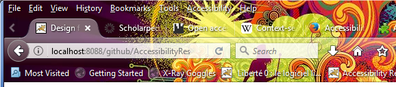
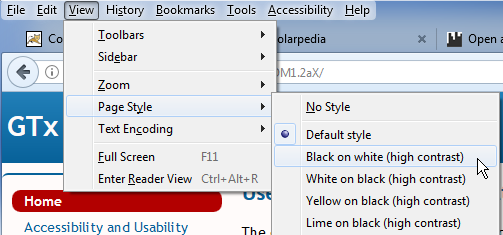

This page combines all the resources from the course
User Interface Personalization
on a single page.
These resources are available as open educational resources (OERs) under the terms of the
Creative Commons Attribution 4.0 International licence
(CC-BY 4.0).
Simply put, this licence allows you to share, adapt and redistribute the content of the OERs,
provided that you correctly attribute the original creators of these resources
(Hochschule der Medien/Stuttgart Media University).
If you are not familiar with this licence, please read it before reusing these OERs.
For a
course description,
see the MOOCAP website.
Introduction to Personalization (Module 1)
About This Course
In this course, you will learn the fundamentals of user interface personalization in the context of web sites and web applications. You will learn how user interface personalization can be used to adapt web pages to a diversity of needs, especially the needs of people with disabilities. The course will explain the difference between adaptable and adaptive user interfaces, and why adaptable user interfaces have been only moderately successful.
You will get an introduction to the Global Public Inclusive Infrastructure (GPII) framework and its infrastructure of automatically adapting a user interface to a user’s needs and preferences. (Optionally, you will also learn how to make an example web application adaptable by connecting it with the Global Public Inclusive Infrastructure (GPII) framework.)
What You'll Learn
- What is the difference between adaptable and adaptive user interfaces?
- What are some common approaches to user interface personalization?
- What features of web pages and web applications can be adapted to support diverse needs, especially the needs of people with disabilities.
- How do I develop or adapt a web site / web application so it becomes adaptable and personalizable?
- What is the Global Public Inclusive Infrastructure (GPII) framework and how does it support personalization?
- How do I use Global Public Inclusive Infrastructure (GPII) framework to make a website adapt to a user’s needs and preferences?
Course Structure
Module 1: Introduction to Personalization
- Examples of user interface personalization.
- Goals and structure of the course.
- Your experience with personalizing software settings.
- What are adaptable interfaces, adaptive interfaces and personalization?
- Why is automatic personalization needed?
- How is it relevant to accessibility?
Module 2: Understanding Personalization on Web Pages and Sites
- Adaptable features of web sites and web applications:
- How are such features relevant to personalization for accessibility?
- How can these features be modeled as "preference terms" for personalization?
- Examples include overall style (stylesheets), text characteristics (font face, font size, alignment, line-height, …) and videos (captions, audio description).
- What accessibility needs are not supported by the above types of personalization?
- Advanced adaptations and how to model them as preference terms.
Module 3: Hands On: Personalizing a Web Interface
In this week, you will use a sample website and work through the following steps:
- Copy the sample website to a locally installed web server (Apache HTTPD, Apache Tomcat, Microsoft IIS, …).
- Become familiar with the website: site structure, HTML, CSS, …
- Become familiar with the sample preference sets.
- Identify at least three features that can be adapted based on the sample preference sets.
- Create JavaScript and CSS to manipulate or adapt these website features.
- Create JavaScript to fetch a needs & preference set from a web server.
- Create JavaScript to read the needs & preference set and adapt the chosen website features accordingly.
A sample website (using HTML and CSS, no server-side script) that you can work on will be provided. However, you are free to use content of your own if you prefer.
Module 4: Introduction to GPII
- What is the General Public Inclusive Infrastructure (GPII)?
- Demo(s) of personalization on the desktop: OS settings, AT settings.
- Understandings needs & preference terms in GPII. Needs & preference terms describe how software settings should be tweaked to fit the needs & preferences of the user; they don’t describe the user’s abilities or disabilities.
Requirements
This course requires basic web development skills, namely HTML, CSS and JavaScript (including JSON). These skills are important if you want to do the practical task in module 3 of the course. The use of JavaScript will involve retrieving a JSON file, reading its contents and then manipulating HTML elements based on the contents of the JSON file. Basic skills should be sufficient to do the task; more advanced skills should allow you to make more ambitious modifications.
Welcome
Barriers, Accessibility and Usability
Barriers
We are all familiar with the experience of stumbling upon a web page that we can’t read because it is in a language that we aren’t familiar with. If it is a multilingual site, it usually offers links or buttons to switch to a different language, hopefully one we can read.
People with disabilities can run into similar problems, for example when
- the website’s default font size is too small,
- the contrast between text and background is too low,
- the contrast between text and background is too high,
- significant parts of the content are not displayed as normal text but as part of images, which cannot be read by blind people or by the type of software they use (screen readers),
- the text requires a reading level that is higher than the visitor’s reading level,
- the website contains content that moves or blinks or is constantly updated, which makes it hard or even impossible for the visitor to read the content,
- the website contains an object that keyboard users can tab into but not out of again (“keyboard trap”; this used to be a major issue with Flash).
Some websites contain widgets to adapt specific aspects of the website, especially font size. Below are a few examples.
Some websites contain widgets that allow the visitor to choose a different background colour or even a different colour combination for foreground and background. Below are a few examples.
Some websites have widgets that can be used to have the content read aloud. Below are links to a few examples:
- Dyslexia Action (check the “Read aloud” button),
- Dyslexieweb (in Dutch; check the “Lees voor” button)
- NABU (in German; check the “Vorlesen” button).
Additional Links
The discussion of widgets for increasing font size or changing colours is only meant as an introduction to accessibility barriers and how some websites have tried to address these barriers. The description is actually not meant to encourage web developers to integrate such widgets into their websites. This type of widgets is no longer state of the art; articles arguing against them started appearing in early 2007; for example:
- Shawn Lawton Henry: “Text Resize Widgets and Fishing” (early 2007).
- Roger Johansson: “Scrap text resize widgets and teach people how to resize text” (21 September 2007).
Discussion: Other Web-based Adaptations
After the brief overview of web-based adaptation functionality in the previous step, think about the following questions and go to the discussion area to talk about your findings:
- Can you find other examples of text resize widgets on the web? What are the main limitations and drawbacks of building text resize widgets into webpages?
- Can you find other websites that allow users to change the background colour? What are the main limitations and drawbacks of building colour switchers into webpages?
- Can you find other websites with read-aloud functionality on the web? What are the main limitations and drawbacks of building read-aloud functionality into webpages?
Accessibility and Usability
In the context of this course, the goal of personalization is to make websites more usable and accessible for everybody. As Tim Berners-Lee, the inventor of the World Wide Web, said in 1997,
The power of the Web is in its universality. Access by everyone regardless of disability is an essential aspect.
(Press release “World Wide Web Consortium Launches International Program Office for Web Accessibility Initiative”, 22 October 1997)
You have probably heard the words “accessibility” and “usability” before, but what is the difference?
Accessibility refers to the degree to which products and services can be used by people with a wide range of abilities. Accessible design often focuses on people with disabilities, but it also benefits people who do not consider themselves as having a disability. For example, elderly people typically experience a gradual loss in vision, hearing and mobility; they usually don’t consider these changes as disabilities but just a part of ageing.
When a user interface can adapt features such as font size, button size and contrast, elderly people can benefit from this. Some situations can lead to temporary “disabilities”. For example, when you have a broken arm, typing is more difficult and voice recognition software can be very helpful. When you have mislaid your glasses, text zooming or text-to-speech software can be useful. When you want to make a phone call in a very noisy environment, you are in a way temporarily disabled by the noise around you. So you could say that inaccessibility is a mismatch between your abilities and the context in which you want to do something.
Usability refers to the degree to which products are easy to use. It is often defined as consisting of several components such as learnability, efficiency, memorability, errors and satisfaction (see for example Jakob Nielsen’s article “Usability 101: Introduction to Usability”). The most frequently quoted definition of usability comes from standard ISO 9246-11:
[The] extent to which a product can be used by specified users to achieve specified goals with effectiveness, efficiency and satisfaction in a specified context of use.
Many accessibility features in websites and products also improve usability for everyone.
According to AbilityNet,
Accessible sites are 35% more usable by everyone whether they have special access needs or not.
However, accessibility does not not cover all aspects of usability.
Similarly, making your website usable will not automatically make your website accessible, especially if usability tests don’t include people with diverse disabilities.
According to the World Wide Web Consortium’s Web Accessibility Initiative,
basic accessibility is a prerequisite for usability.
Accessibility Features in Firefox
The above video shows several accessibility features in Firefox, including zooming. The zooming in the video increases the size of everything on the page. However, it is also possible to increase just the text size. You can do this as follows:
- Press the Alt key to bring up the Firefox menu at the top of the window.
- In the menu bar, open the View menu, then go to Zoom.
- In the Zoom submenu, select Zoom Text Only. When this option is selected, zooming will only increase text size, not the size of images.
Discussion: Browser Accessibility Features
Now that you have seen some of the adaptation options in Firefox that improve the accessibility of web content for some types of users, please think about the following questions and discuss your thoughts in the discussion forum:
- Can you think of types of web content that cannot be made more readable by means of the browser’s accessibility features?
- Can you think of any other downsides to these techniques for making web content more accessible?
Accessibility Add-ons for Firefox
Accessibility and “One Size Fits All”
Since the mid 1990s, there have been efforts to formulate guidelines to increase the accessibility of webpages for people with disabilities. The year 1999 then saw the publication of the Web Content Accessibility Guidelines 1.0 (WCAG 1.0), followed by a second version in December 2008.
Around the year 2000, it was not unusual for websites to have a separate “accessible” version. This accessible version was often a text-only version. For example, in 2000, the UK supermarket chain Tesco created a separate online version of their site that was targeted at people with visual impairments, which resulted in considerable additional revenue. However, such separate versions were not always updated as frequently as the main website. As disability advocates pointed out, “separate is not equal”, and separate websites for people with disabilities gradually became a thing of the past.
As a result, websites had only one version (except perhaps for different language versions). However, different people have different needs. For example, people with an intellectual disability (USA term) or a general learning disability (UK term) would benefit from a design that is very different from a design for a general audience. People with low vision would benefit from a design with big fonts, high contrast and a shorter line length. In fact, the same person with low vision may prefer black on white text in one context and an inverted contrast in another context, for example, when reading a longer text on a white background would cause too much glare.
In other words, one size does not quite fit all, and an interface that automatically adapts to individual needs would benefit people with a wide range of abilities and in a variety of situations.
After the emergence of mobile devices, the design choice between one version or several versions became an issue again, since designers now need to cater for a much larger range of screen sizes. One way of dealing with this is adaptive web design, which essentially creates different versions of a site for different devices. Another way of dealing with different devices is responsive web design: this creates a single web site that is flexible enough to be viewed on devices with different screen sizes. Adaptive web design creates more work than responsive web design, but it also creates more freedom, since it allows you to create different experiences for different mobile devices. However, the primary focus is on device capabilities, not on users.
Additional Links
- Gregg C. Vanderheiden: Design of HTML (Mosaic) Pages to Increase their Accessibility to Users with Disabilities Strategies for Today and Tomorrow, 31 January 1995. Probably the earliest extant example of accessibility guidelines for the web.
- W3C Wiki: Accessibility Basic. This wiki page briefly discusses Tesco’s separate website.
- Law Office of Lainey Feingold: Separate is Not Equal: Good News for Grocery Delivery, 8 February 2014. afeway used to have a separate text-only site for blind customers. In 2014, the company decided to update the main site to the Web Content Accessibility Guidelines 2.0 Level AA and remove the separate site.
- WebAIM: Design Considerations: Text-only Versions.
- Automatic adaptation of user interfaces has also been proposed as a way to personalize interfaces based on culture. See Katharina Reinecke & Abraham Bernstein: Knowing What a User Likes: A Design Science Approach to Interfaces That Automatically Adapt to Culture, MIS Quarterly, Vol. 37, No. 2, pp. 427-453/June 2013.
Adaptable Versus Adaptive User Interfaces
In the videos about browser accessibility features and accessibility add-ons, we saw how HTML content can be adapted to make it more readable. HTML is a text-based medium and is therefore very adaptable. By contrast, bitmap images are usually not adaptable; they can only be enlarged by enlarging their pixels, and colours cannot be adapted on the fly. (Vector-based images, especially SVG or Scalable Vector Graphics, offer more possibilities.)
However, in the videos in the previous steps, the adaptation was performed by the browser or a browser add-on, not by the HTML page itself. If a webpage provided a mechanism to adapt its own presentation, content or both, it would be an example of an adaptable user interface. Simply put, an adaptable user interface is an interface that allows the user to tweak or optimize it.
Adaptable user interfaces are not unusual in desktop applications. For example, in the desktop version of Firefox, you can customize the user interface by enabling or disabling the title bar, the menu bar and the bookmarks toolbar. (These user interface elements used to be visible by default, but when tablets became widely used, the Firefox developers decided to hide them by default in order to save screen space on smaller devices.) In addition, you can also install themes to change colours and other aspects of the user interface.
The image below shows top part of Firefox's user interface with the theme "DBFDNM" by SERG (licence: CC-BY).
A browser theme may make the labels on the user interface elements hard to read.

These tweaks and adaptations are performed by the user; they are not performed automatically by the software itself. If these changes worked automatically, we would call such interfaces adaptive. An adaptive user interface is a user interface that automatically changes its interface elements and possibly its content in order to suit the needs and/or preferences of the user, the user’s context or both.
Adaptable and adaptive user interfaces are not mutually exclusive. First, it is good practice to give the user control over what the user interface looks like, so they can undo or tweak automatic changes in an adaptive user interface. Second, from a technical point of view, adaptive user interfaces can be built by exploiting adaptable features that are already available, for example by adding some sort of intelligent component that decides when certain adaptations should take place.
Designers of adaptable user interfaces should always bear in mind that many users, possibly as many as 95%, never change the settings in a software program. This has several consequences. One of them is that programs should be delivered to users with sensible default settings. Since users are very diverse, these default settings will necessarily be a compromise based on what would be best for “most users”. Another consequence is that it would be worthwhile to invest some time and effort in finding out what settings users would change most (assuming they can find them) and make these settings easy to find. This second piece of advice would also apply to adaptive user interfaces: when a user interfaces changes automatically and the user does not like this change, it should be easy for the user to find out how to undo it.
Additional Links
- Jared Spool: Do users change their settings?, User Interface Engineering Blog, 14 September 2011.
- Wendy E. Mackay: Triggers and Barriers to Customizing Software. CHI '91 Proceedings of the SIGCHI Conference on Human Factors in Computing Systems, New Orleans, Louisiana, 27 April – 2 May 1991. New York: ACM, 1991. P. 153–1.
- Joanna McGrenere; Ronald M. Baecker; Kellogg S. Booth: An evaluation of a multiple interface design solution for bloated software. CHI '02 Proceedings of the SIGCHI Conference on Human Factors in Computing Systems, Minneapolis, Minnesota, 20 – 25 April 2002. New York: ACM, 2002. Pages 164–170.
Understanding Personalization on Web Pages and Sites (Module 2)
JSON-based Needs & Preferences Sets
Now that you are familiar with some of the aspects of adaptation and accessibility, it is time to explain how the adaptations that a specific person needs (or wants) can be described in a machine-readable way. A machine-readable description of adaptation needs or preferences is often called a “user profile”. In this course we will be using a specific “flavour” of user profile that does not contain any personally identifiable information but just a list of adaptations and settings that describe what a specific user needs or prefers; we will therefore call it a “needs and preference set” or, in short, “NP set”.
What does an NP set look like? In this context, we will be using the format defined by the Global Public Inclusive Infrastructure or GPII. The core of GPII is a piece of open-source software infrastructure developed in several research and development projects starting in 2011. (More details are available via the links at the bottom of this page and in module 4 of this course.)
The NP set format used in GPII is based on JSON. Below is an example:
{
"contexts":{
"gpii-default":{
"name":"Default preferences",
"preferences":{
"http://registry.gpii.eu/common/language":"en-GB",
"http://registry.gpii.eu/common/fontSize":24,
"http://registry.gpii.eu/common/linkAdaptation":"emphasizeLinks",
"http://registry.gpii.eu/common/highContrastEnabled":true,
"http://registry.gpii.eu/common/highContrastTheme":"white-black",
"http://registry.gpii.eu/common/signLanguageEnabled":false,
"http://registry.gpii.net/applications/eu.gpii.olb":{
"lineSpacing":2,
"inputsLarger":true
}
}
}
}
}(You can also find this example online. Since we will refer back to this example in the next few units, it may be helpful to keep the example open in a different browser window or tab.)
The most important part is the “preferences” block. It contains two types of preferences: the first type has the namespace
http://registry.gpii.eu/common/;
the second type has the namespace http://registry.gpii.net/applications/eu.gpii.olb.
Preference terms in the first namespace are part of a common language or bridge language that can be understood independent of specific applications that support GPII.
We therefore call these terms “common terms”. These are the subject of the next unit.
Common Terms
Whenever possible, common terms use data types and value ranges that are intended to make the translation to specific application settings as easy as possible.
For example, applications may identify language—such the language of a user interface or for speech synthesis—in various ways: some use numbers, some use non-standard strings that only the application supports.
The common term http://registry.gpii.eu/common/language uses values based on
IETF BCP 47 (Best Common Practice 47: “Tags for Identifying Languages”, defined by the Internet Engineering Task Force) and can therefore be used to identify thousands of languages.
These language tags can then be translated or transformed into whatever values are supported by a specific application.
This “transformation” is one of the most important tasks of the program code that enables communication between GPII and an application.
The same applies to the common term http://registry.gpii.eu/common/fontSize: this term defines font size in points.
Some applications define font size with strings such as “medium”, “large” and “x-large”.
Once you know the point sizes that correspond to these strings, it is possible to write code that transforms the point sizes to a string that is supported by the application.
The common terms that we will use in this course are a small set of around 60 terms based on work in the Cloud4all project (2011–2015), the project that started the development of GPII. This limited set is meant to be expanded when the revision of the standard ISO/IEC 24751 has been completed. (ISO/IEC 24751:2008: “Information technology -- Individualized adaptability and accessibility in e-learning, education and training” is a standard that covers adaptability in the context of e-learning and contained a list of preference terms that was fixed for the lifetime of the standard. The revised standard will apply to ICT in general and will replace the closed list with an open-ended “registry” where GPII implementers will be able to register new preference terms.)
Application-Specific Terms
In our example NP set,
the terms in the namespace http://registry.gpii.net/applications/eu.gpii.olb (in our example NP set) refer to settings in an application identified as eu.gpii.olb.
These settings are not described using “common terms” but with “application-specific terms”. This type of terms uses names, data types and value ranges that directly reflect what an application uses internally.
There may be several reasons for using application-specific terms instead of common terms.
- First, the set of common terms is limited and an application may have one or more settings that cannot be expressed using only common terms. An application’s set of application-specific terms is under control of the application developer, so the application-specific terms can describe the application’s settings without waiting for approval of new common terms.
- Second, if an application’s settings are expressed in common terms, the conversion into actual settings may sometimes lead to a lack of precision in the setting values. This lack of precision can be avoided by using application-specific terms that map directly to the real settings. (A loss of precision may also occur in scenarios where application-specific preferences are converted into preferences expressed as common terms.)
- Finally, it is technically possible to convert some application settings into GPII’s JSON format, for example in order to create a GPII user’s initial NP set. Using application-specific terms to express these settings would avoid the two problems described above.
Application-specific terms are always in a namespace that starts with the string http://registry.gpii.net/applications/.
For example, application-specific settings for the open-source screen reader
NVDA (Non-Visual Desktop Access) use the namespace http://registry.gpii.net/applications/org.nvda-project/,
and settings for the magnifier in GNOME Shell (one of the desktops for GNU/Linux) use the namespace http://registry.gpii.net/applications/org.gnome.desktop.a11y.magnifier/.
The Other Parts of the NP Set
Finally, let’s turn our attention to the code that wraps around the preferences in our example NP set.
The first level in the NP set, "contexts", is a way of subdividing an NP set into preferences that may apply under different circumstances.
For example, there may be one set of preferences that applies most of the time (e.g. "gpii-default", as in the example above) and another set of preferences that applies only in dark surroundings (e.g. "dark").
The settings for dark surroundings might say, for example, that the screen should be dimmed.
A GPII implementation that can detect changes in ambient light may then look for the "dark" settings and automatically dim the screen.
(In that case, the NP set will also need to describe what level of illuminance is considered “dark” so that it can be evaluated against the measurements of a lux meter or a similar sensor. This is outside the scope of this course.)
Finally, the value for "name" gives a human-readable name to the set of preferences for a specific context. This name can be used in editing tools for NP sets.
Additional Links
These links are not required reading for the course.
- Raising the Floor, the organisation that initiated and co-ordinates work on GPII.
- ISO/IEC 24751-1:2008: “Information technology -- Individualized adaptability and accessibility in e-learning, education and training -- Part 1: Framework and reference model”.
Alternative Style Sheets
A relatively straightforward way of providing adaptability is providing alternative style sheets.
When web developers provide more than one style sheet, the goal is usually to cater for different devices and media.
CSS 2 defined a list of media types for which you can write separate style sheets, for example, “all”, “screen”, “print”, “projection” and “speech”.
These media types can be used in two important ways: in @media rules inside CSS style sheets, and in the link element witch which you reference style sheets for an HTML document.
In this step, we will look only at link elements for specifying external style sheets.
(For the purpose of this introduction, we will ignore the media queries introduced in CSS 3.)
The following code example shows how media types can be used in the link element:
<link rel="stylesheet" type="text/css" media="all" href="/css/allmedia.css" />
<link rel="stylesheet" type="text/css" media="screen" href="/css/screen.css" />
<link rel="stylesheet" type="text/css" media="print" href="/css/print.css" />
(Note: HTML code examples in this course use XHTML5 syntax.)
This code example instructs the browser to load the style sheet “allmedia.css” for all types of media it supports. When the HTML page is displayed on a screen, it should also load “screen.css” but ignore “print.css”; in a print preview and when sending the HTML page to a printer, it should load “print.css” and ignore “screen.css”.
Media types allow you to define style sheet for specific devices but people using the same device still get the same style sheet. If a screen style sheet implements a low-contrast theme, people who need high contrast settings will still get the low-contrast style sheet (unless perhaps if they print the HTML page). People who need a bigger font size still get the same font size that everyone else gets, unless they belong to the small group of expert users who know how to increase font size in the browser. Fortunately, we can use the link element to provide style sheets that cater for different accessibility needs, namely by providing alternative style sheets.
The following code example shows how you can link to alternative style sheets:
<link rel="stylesheet" type="text/css" media="screen" href="/css/gtx_hdm12ax.css" title="Default style" />
<link rel="alternate stylesheet" type="text/css" media="screen" href="/css/black-on-white.css" title="Black on white (high contrast)" />
<link rel="alternate stylesheet" type="text/css" media="screen" href="/css/white-on-black.css" title="White on black (high contrast)" />
<link rel="alternate stylesheet" type="text/css" media="screen" href="/css/yellow-on-black.css" title="Yellow on black (high contrast)" />
<link rel="alternate stylesheet" type="text/css" media="screen" href="/css/lime-on-black.css" title="Lime on black (high contrast)" />
For simplicity’s sake, we are only considering the “screen” media type. The most important thing is the addition of the keyword “alternate” to the link element’s rel attribute; this keyword tells the browser to treat the linked style sheet as an alternative style sheet.
By default, the browser will only load the style sheet(s) without the “alternate” keyword.
The browser will only load an alternative style sheet instead of the default if it is somehow told to do so.
How can the visitor of a website benefit from alternative style sheets?
Few browsers provide a mechanism to allow people to load an alternative style sheet.
The Mozilla browsers Firefox and SeaMonkey display a list of style sheets in the View menu.
In Firefox, go to View, then open the submenu “Page Style”. (You will first need to enable the menu bar in the browser’s customisation options.)
In SeaMonkey, go to View, then open the submenu “Use Style”.
In Opera 12, the last version based on the Presto layout engine,
go to View and open the Style menu.
The browser will use the values of the tite attributes on the link elements to populate the list of alternative style sheets; this is why adding the title attribute on these link elements is required.
The screenshot below shows how Firefox 54 displays the list of alternative style sheets created by the above code sample. (Image copyright @ Mozilla Foundation.)

Even in the few browsers that enable users to select an alternative style sheet, this selection is always limited to the current page and does not apply to other pages on the same website. Alternative style sheets are only really useful if the user’s selection can be remembered, either on the server side or on the client side.
The need for high-contrast style sheets can be stored in an NP set using the following common terms:
highContrastEnabled: this term has a Boolean data type; its default value is “false”;highContrastTheme: this term can have one of the following values: black-white, white-black, yellow-black, black-yellow, lime-black (“black-white” stand for black text on a white background, “white-black” stands for white text on a black background, etc.).
The reason behind the separate term highContrastEnabled instead of simply adding “default” as a value to highContrastTheme,
is that some people may not use a high-contrast theme all the time, but if they need one, it should be the one identified by highContrastTheme.
highContrastEnabled then simply switches high contrast on or off, depending on when it is needed.
A website with GPII support and style sheets for high contrast may then use the preferences for high contrast in a user’s NP set to enable the appropriate style sheet across the whole website.
Additional Links
- Media types in CSS 2.1.
- Adam Roberts: HTML vs XHTML: Comparing Two Parsing Modes, SitePoint, April 2014.
- HTML5.2 (W3C Recommendation 2017): Link type “alternate”.
- The sample web site for the third module in the course provides alternative style sheets.
Fonts and Other Text Characteristics
Text is an important part of the web, and people’s need and preferences regarding text readability vary a lot. For this reason, we will introduce a number of common terms that describe various characteristics of on-screen text. Each of these can be translated into CSS rules, but they are also relevant to office formats (especially in word processing and spreadsheets).
The common term fontSize defines a font size in points. This means that its value range is much more restricted than the value range of the CSS property font-size.
If an NP set does not contain a preference for fontSize, then the website’s CSS rules apply as normal.
(Since we have no way to define different font sizes for different types of content, e.g. headings, fontSize will only apply to “normal” text, such as paragraphs, table cells and lists.)
The common term lineHeight defines a frequently overlooked aspect of readability: the space between individual lines.
The value range for lineHeight is the same as for the line-height property in CSS 2.1 with the exclusion of the value “inherit”.
This means that you can use the value “normal”, a positive number value, a positive length value or a positive percentage.
The remaining common terms in this unit define colours: foregroundColour, backgroundColour, unvisitedLinkColour and visitedLinkColour.
Each of these common terms accepts value from the CSS Color Module Level 3.
They describe the colours suggested by their names: foregroundColour sets the text colour, backgroundColour sets the background colour, unvisitedLinkColour sets the colour of links that have not been visited yet (according to the browser’s history), and visitedLinkColour sets the colour for links that have already been visited (again, according to the browser’s history).
Note that word processing documents and other office documents can also contain links, so the last two common terms would also apply to office software that supports GPII.
Obviously, there are more text characteristics then we have described here, but the current set should be sufficient for this course.
Additional Links
- WebAIM: Fonts.
- “font-size” in Cascading Style Sheets Level 2 Revision 1 (CSS 2.1) Specification (W3C Recommendation 07 June 2011, edited in place 12 April 2016 to point to new work).
- “line-height” in Cascading Style Sheets Level 2 Revision 1 (CSS 2.1) Specification (W3C Recommendation 07 June 2011, edited in place 12 April 2016 to point to new work).
- “Color units” in CSS Color Module Level 3 (W3C Recommendation 07 June 2011).
- Laura Franz: Size Matters: Balancing Line Length And Font Size In Responsive Web Design, Smashing Magazine, 29 September 2014.
Navigation
Navigation is an important aspect of a website’s usability. While overall site navigation is very important, this unit is concerned with navigation within single pages. There are two common terms that can help improve intra-page navigation.
The common term displaySkiplinks defines whether and on which conditions “skip links” or skip navigation links should be visible.
A skip link is a link at the top of a web page that allows keyboard users to jump over or skip to the main content. Keyboard users rely a lot on the TAB key to move between elements such as links and form elements.
The types of elements that can be reached in this way are called “focusable elements”, and the sequence of elements that you can reach by pressing TAB is known as the TAB sequence.
Since, in the TAB sequence, the navigation menu is usually located between the top of the page and the main content, keyboard users would need a lot of TAB key presses to arrive at the main content.
Skiplinks are not necessarily visible: some sites make them visible by default, other sites make them visible only when they receive keyboard focus (typically as a result of tabbing through the links on the page),
and still other sites hide them under all circumstances, so only screen reader users can become aware of their presence.
However, for sighted users who use a mouse or other pointing device, visible skiplinks are simply visual clutter.
The common term displaySkiplinks determines if and when skiplinks should be visible.
The term’s values are self-explanatory: “always” means that skiplinks should always be visible, “onfocus” means that they should only be visible when they receive keyboard focus, and “never” means that they should always remain invisible.
The common term tableOfContents determines whether a table of contents should be added to the page.
This assumes that the page contains correctly marked up headings (using the HTML elements h1, h2, h3, etcetera) and does not apply to all types of web content.
For example, a page that consists only of a search form (as in many search engines), a single form or single-page web application may not have any headings, and a table of contents would then be irrelevant.
On a web page with a lot of context and correctly marked up headings, JavaScript can be used to generate a (hierarchical) list of links to the actual headings; this would then serve as a table of contents.
The common term tableOfContents has a Boolean data type; the value “true” would indicate that a table of contents is required.
However, it is up to the website that implements GPII support to determine whether generating a table of contents is appropriate and, if yes, whether one is already hard-coded into the HTML content.
If the HTML content already contains a table of contents, no additional work is needed.
Additional Links
- WebAIM: "Skip Navigation" Links. Note: this page has a “skip to main content” link that only becomes visible when it receives keyboard focus.
- Emily Coward: What are Skip Links, Nomensa Humanising Technology Blog, 2 December 2004. Note: this page also has a “skip to content” link that only becomes visible when it receives keyboard focus.
- The web site Global Accessibility News has a skiplink that is always visible.
- The web site of Smashing Magazine used to have a skiplink that is never visible but that now becomes visible when you tab through the content (search for "
#main" in the source code).
Videos: Captions and Audio Description
Thanks to broadband internet, video has become very common on the web. However, video is not always accessible to all types of users.
Blind and visually impaired people cannot see (or cannot see well) what is happening on the screen. Visual information that is essential for understanding what is happening in the video can be described in audio. This is known as “audio description”. There are two ways to provide audio description: either you add audio descriptions in pauses in the dialogue, or you create a separate video where the video is paused at each point that requires a description, and add the audio description in that pause.
People who are Deaf or hard of hearing cannot hear (or cannot hear well) the audio, which includes both dialogue and non-speech sounds. The most important method of making video accessible for this user group is the addition of captions. Captions are text overlaid over the video (usually at the bottom) that transcribe both the dialogue and important non-speech sounds. Non-speech sounds can come from the people in the video (e.g. sighing, sobbing), animals (e.g. “dog barking”) or objects (e.g. “door slams”). Lyrics should also be transcribed. Some captions use different colours for different speakers in a scene. There are two types of captions: open captions are always visible, while closed captions can be shown or hidden on demand. Captions should not be confused with subtitles, which provide a translation of the dialogue without covering non-speech sounds.
Sign language is a means of communication that can serve as an accessible alternative to both dialogue and written text. It is normally not used as an alternative to speech in web-based video, but it is used in news broadcasts in certain countries. Technically, it can also be added to web content, for example, in videos next to text content or videos that pop up on demand. Sign language is usually provided by filming sign language interpreters. There are also software programs that can translate text into sign language gestures performed by an animated character. These sign language avatars have sometimes met with resistance from the Deaf community.
The goal of this unit is not to teach you how to create captions, audio descriptions or sign language videos, but to introduce you to the common terms relevant to these accessibility techniques.
captionsEnabledis a boolean term for enabling or disabling captions.subtitlesEnabledis a boolean term for enabling or disabling subtitles, which provide a translation of the dialogue.audioDescriptionEnabledis a boolean term for enabling or disabling audio description. In practice this will usually require an alternative video containing audio description.signLanguageEnabledis a boolean term for enabling or disabling sign language.signLanguageis a term that identifies the sign language that a user needs. Sign language are identified using the same standard as other languages, i.e. by means of values based on IETF BCP 47 (Best Common Practice 47: “Tags for Identifying Languages”, defined by the Internet Engineering Task Force). For example, American Sign Language is identified as “ase”, British Sign Language (BSL) is identified as “bfi”, German Sign Language (Deutsche Gebärdensprache, DGS) is identified as “gsg”, etcetera. Tags for sign language are different from tags for spoken languages such as English, German, etcetera, because there is no direct relationship between sign languages and spoken languages.
Additional Links
- YouDescribe: free online tool for adding audio description to YouTube videos.
- Media Access Australia: How to Audio Describe a YouTube Video: short instructions for using YouDescribe.
- We're The Superhumans: example of a an audio-described video by Channel 4 (on YouTube, July 2016). For comparison, watch the version without audio description.
- Audio description at the National Theatre: short interview with an audio describer at the National Theatre (UK).
- Sign Language and Audio Description in theatre: video commissioned by the British Council.
- Emily Griffin: 5 Thoughtful Tips for Closed Captioning Videos, 3 PlayMedia blog, 18 May 2016.
- The American Sign Language Avatar Project at DePaul University.
Advanced Adaptations
The previous units introduced some of the ways in which web content can be adapted to the needs of various users. The video “HdM Adaptable Online Banking Solution 2016” (below) demonstrates some other types of adaptations. The video shows a simulation of an online banking interface with the following features:
- A collapsible control panel at the top that allows users to adapt features such as font size, line height and font face.
- Optional pictograms that make the text content easier to understand for people with a reading impairment.
- Optional sign language videos for the form elements.
- A simplified user interface for people with an intellectual disability (US terminology) or a general learning disability (UK terminology).
The research prototype in this video is one of the outcomes of the European projects Cloud4all and Prosperity4All, which received funding from the European Union's Seventh Framework Programme (FP7/2007-2013) under the grant agreements No.289016 (Cloud4all) and No. No.610510 (Prosperity4All).
Hands On: Personalizing a Web Interface (Module 3)
Introduction to the Hands-on Task
Project: Making a Website Adaptive
Your task in this module is to choose a website and to make it adapt to one or more preference sets. Briefly put, the goal of the task is to write JavaScript code that can fetch an NP set, read it and apply one or more of the preferences to the website. Below is a description of what you will need for this.
First, you will need a website that you can make adaptive. If you have no website at your disposal, you can use a sample website that was created specifically for this course. (This website will be described in the next unit.)
Second, you will need a few preference sets with common terms. A small set of NP sets is available on the website at https://remexlabs.github.io/GTx_HDM12aX_preferences/.
Finally, you will need to understand the meaning of the common terms. Some of these were explained in the second module of the course. For a more complete overview, see the page https://remexlabs.github.io/GTx_HDM1.2aX/gpii-common-terms.html (which is part of the sample website prepared for this task).
So what can you do for this task?
First, you need to choose a website you can work on. Second, have a look at the NP sets and make sure that you understand the common terms that are used in them. Third, decide which common terms you want to support in the website, for example, activating a contrast theme, setting a different font size, generating a table of contents, or writing a translation of a captions file and JavaScript to activating the language version required in the NP set. You will also need to implement some interface controls to allow a user (or a tester) to pick the NP set that should be applied to the site.
Example Website
For the purpose of the exercise, you can either use an example website prepared by the course team, or a website that you created yourself. This section describes the example website prepared for the course.
You can find the code for the sample website in the GitHub repository at https://github.com/REMEXLabs/GTx_HDM1.2aX.
This website uses static HTML, CSS and a little bit of JavaScript. It contains pages that use various types of HTML elements, such as headings, a navigation menu, images, a table, a form, a definition list and a few embedded videos (from Vimeo and YouTube). Most of the content of the site is available under a Creative Commons Attribution 4.0 International License, and the JavaScript is available under the Apache License 2.0. This should give you a lot of liberty to reuse its content.
You can see the site “live” at https://remexlabs.github.io/GTx_HDM1.2aX/index.html.
The website has a number of characteristics that you won't find on most other websites:
- The website has several "alternative style sheets".
The link to the default style sheet has the attribute
rel="stylesheet"; the links to the other style sheets have the attributerel="alternate stylesheet". These alternative style sheets have no effect on the webpage, unless they are explicitly loaded. In some browsers, this can be done by the user. For example, in Firefox by going to theViewmenu and opening thePage Stylesubmenu, and selecting one of the other style sheets. (Thetitleattributes on thelinkelement are used to populate the list of style sheets underPage Style. You can make the menu bar visible by opening the Firefox settings, then going toCustomizeand "Show/Hide Toolbars".) - The page "Publisher information / Impressum" is irrelevant if your website is not subject to German law.
- The 404 page is only relevant if you "publish" your fork of the website on GitHub pages. It uses YAML front matter that is supported on GitHub pages but not necessarily on other hosts or servers. (See also Creating a custom 404 page for your GitHub Pages site on GitHub Help.)
However, make sure to check the code in the GitHub repository instead of only looking at the “live” version. The repository contains a number of resources that you won’t find by only looking at the live version, for example an MP4 video, captions files for the video, a few JavaScript files and a test page (named ‘testpage.html’) that uses some of the JavaScript functions. Even if you are not very familiar with the use of JavaScript to fetch and parse JSON files, the example code should help you get over this hurdle, so you can focus on the more interesting aspect of making the web content adaptive.
Running the Example Website on a Local Server
You can run the example website directly from the file system, since it does not rely on server-side scripts. However, for a more realistic experience, you may want to run it on a locally installed server. This is especially important for the XmlHttpRequests that fetch the NP sets. Unless you want to add features that rely on server-side scripts (e.g. server-side JavaScript on Node.js, PHP, ASP.NET or JSP), most web servers will suit your needs. Below are a few pointers for course participants who have not used a local web server before.
The Apache HTTP Server, which many people simply call “Apache”, is a free and open-source cross-platform web server. It is available from the website https://httpd.apache.org/. On GNU/Linux, it is usually part of the package system and can be installed using the usual package installation commands (e.g. sudo dnf install httpd on recent versions of Fedora, sudo apt-get install apache2 on Ubuntu, or sudo yum install httpd on some other GNU/Linux distributions). For Windows, you will need to download a binary from the Apache website. In Mac OS, Apache is already built-in, but you will need to access the command line in order to enable the server.
Apache Tomcat is a free and open-source Java Servlet Container, but you can also use it as a local web server to serve static HTML pages. On GNU/Linux, Apache Tomcat is not usually part of the package system, so you typically need to download an archive file and extract it locally. For Windows, you will need to download an installer from the Apache Tomcat website: http://tomcat.apache.org/. For Mac OS, you will also need to download a ZIP file from the Apache Tomcat website. Apache Tomcat requires Java.
On Microsoft Windows, you may also consider IIS Express, a lightweight version of Microsoft’s IIS (Internet Information Services). It can be downloaded and installed separately, or as part of some versions of Visual Studio (but not Visual Studio Code).
It is also possible to install a XAMPP or LAMP software bundle that includes not only a web server but also a database management system and interpreters for server-side scripting languages. XAMPP includes the Apache HTTP server, the MariaDB database and interpreters for PHP and Perl. LAMP includes the Apache HTTP server, the MySQL database and an interpreter for PHP. (The “L” stands for Linux; versions for Windows are referred to as WAMP; versions for MacOS are referred to as MAMP.)
Finally, some integrated development environments (IDEs) for web development come with a local server built in. One example of this WebStorm by JetBrains.
Note that you should not run a publicly accessible server without taking a number of security precautions. This applies especially to Apache Tomcat and IIS Express.
Additional Links
- Apache Software Foundation: Apache Tomcat.
- Apache Software Foundation: Apache HTTP Server.
- Microsoft: Microsoft Internet Information Services (IIS) 7.5 Express (for Microsoft Windows versions from Windows XP to Windows 10).
- Microsoft: Internet Information Services (IIS) 10.0 Express (requires Windows 7 or newer).
- Tech Lecture (YouTube channel): Installing on Apache2 Webserver in Fedora 25 || httpd install (March 2017).
- Basic Linux Installation Configuration (YouTube channel): Apache Tutorial install and run Apache web server in Ubuntu Linux (July 2016).
- Cloud Network (YouTube channel): How to Install and Configure Apache Tomcat 8.0.23 in Ubuntu Server 16.04, CentOS 7 & Fedora 24 (June 2015).
- HowtoForge: How to Install and Configure Apache Tomcat 8.5 on Ubuntu 16.04.
- Wolf Paulus: Installing Java 8 and Tomcat 8 on Debian Jessie or Raspbian or RedHat (7 June 2015).
- Tomcat - How to Install and Run Tomcat on Mac (YouTube, August 2016).
- ProgrammingKnowledge (YouTube channel): How to Install Apache Tomcat on Mac OS X, and/or Codeblind: How to Install Apache Tomcat on Mac OS X (July 2017).
- Apache Friends: XAMPP Installers and Downloads.
- Ubuntu Community Help Wiki: ApacheMySQLPHP (LAMP on Ubuntu).
- JetBrains: WebStorm: Features.
- Wikipedia: Comparison of web server software.